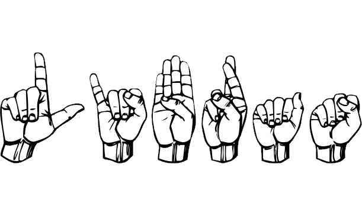

Problema técnico com o site?
Algo não funciona?
Reclame aqui!
Até mesmo adicionar algum recurso!
Grato André
Última correção/atualização realizada em 02/05/2022 ás 00:53h AM - Segunda-feira
Trabalho entrevista em vídeo
(Conteúdo removido com sucesso do sistema)
Trabalho Apresentação Libras

Libras é a abreviação de Língua Brasileira de Sinais.
A língua de sinais também é conhecida como língua gestual, pois utiliza as mãos e os dedos, em substituição à língua, para se comunicar.
É por meio dela que as pessoas surdas, ou com deficiência auditiva, se comunicam entre si e com o mundo.